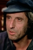

Also known as:Hexen bis aufs Blut gequält (original title)
Country:Germany, 96 minutes
Spoken languages:German
Genres:Horror, Drama, History, Thriller
Director(s):Michael Armstrong, Adrian Hoven
Writer(s):Michael Armstrong, Adrian Hoven
Video Codec:Unknown
Number: 2882


Certification:
Storyline:
In 1700s Austria, a witch-hunter's apprentice has doubts about the righteousness of witch-hunting when he witnesses the brutality, the injustice, the falsehood, the torture and the arbitrary killing that go with the job.
Cast: 


Medium: Bluray + DVD,
Loaned: No
Aspect ratio: Unknown